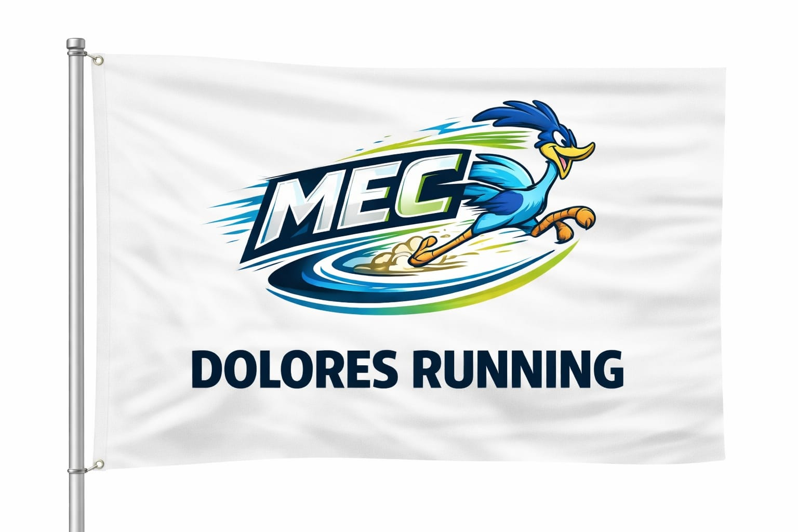

El 24 de enero se dio por comenzada una nueva edición de "Las 8 de Soriano". Un campeonato que promueve el deporte en la región, al mismo tiempo que el turismo por el interior del departamento. De esta competencia participan gran cantidad de agrupaciones y gimnasios de distintos lugares. En el anterior año ha llamado la atención de varios corredores que ninguna (o no las vieron) de las agrupaciones que participaban corrían en representación de la ciudad de Dolores. Ante esta inexistencia de grupos abiertos y esta falta de representación de la ciudad de Dolores en las diferentes competencias de la zona, se crea el "MEC - Dolores Running El MEC - Dolores Running no es un grupo cerrado ni mucho menos, sino que es la oportunidad perfecta para crear una comunidad runner en nuestra ciudad. Cuando uno va a la rambla a dar una vuelta, a tomar mate o a entrenar, siempre ve a alguna persona corriendo o caminando por el circuito costero. Lo que genera la pregunta, ¿se conocen entre ellos?, ¿hay una comunidad runner en Dolores? Como no se halló respuesta se entendió que no había una comunidad abierta para el que quiera ser parte. Y ante tal conclusión se decidió crear el espacio para una comunidad de corredores en la ciudad. Por eso es que ahora invitamos a la gente a correr y a sumarse a esta iniciativa. Desees arrancar a correr, competir o simplemente disfrutar del deporte, te invitamos a ser parte de una comunidad que represente a la ciudad. Para que en cada ocasión que amerite levantemos una bandera y usemos una remera que represente a nuestra ciudad. ¡De seguro hay muchos que compartimos la misma afición!·
